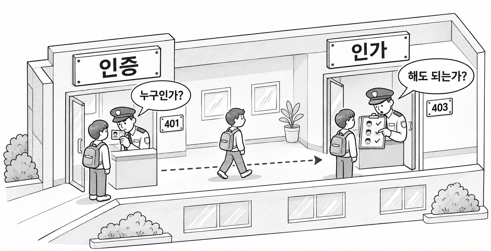
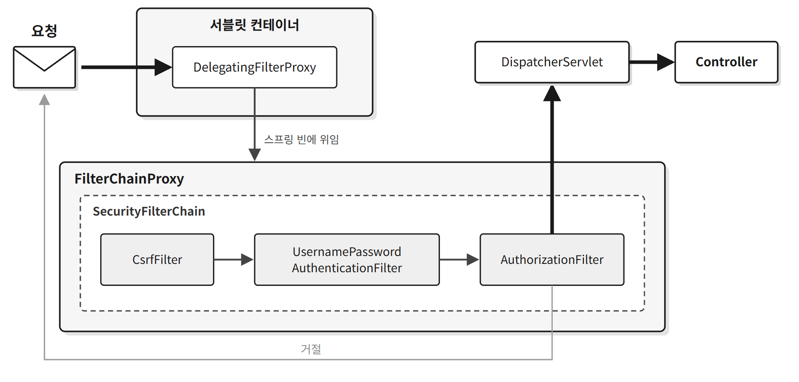
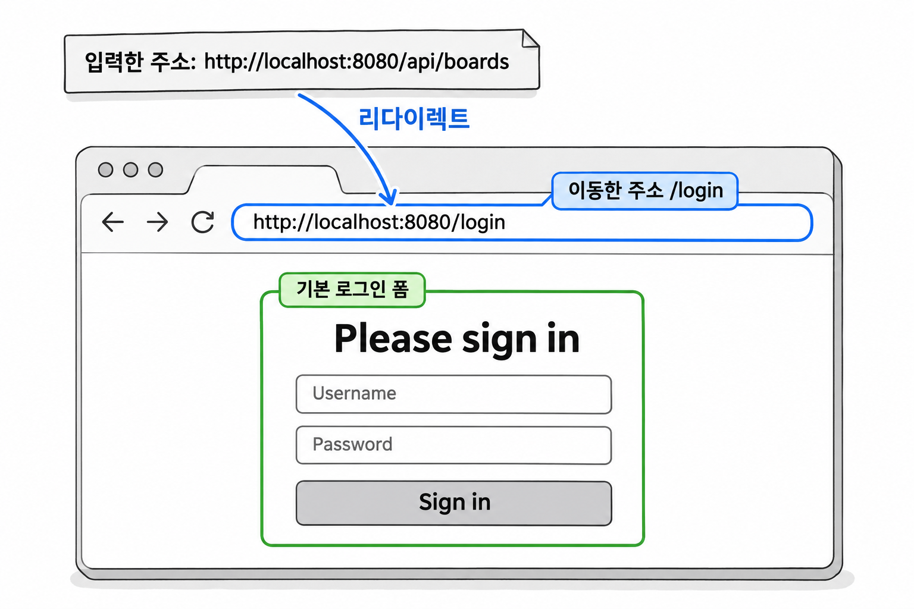
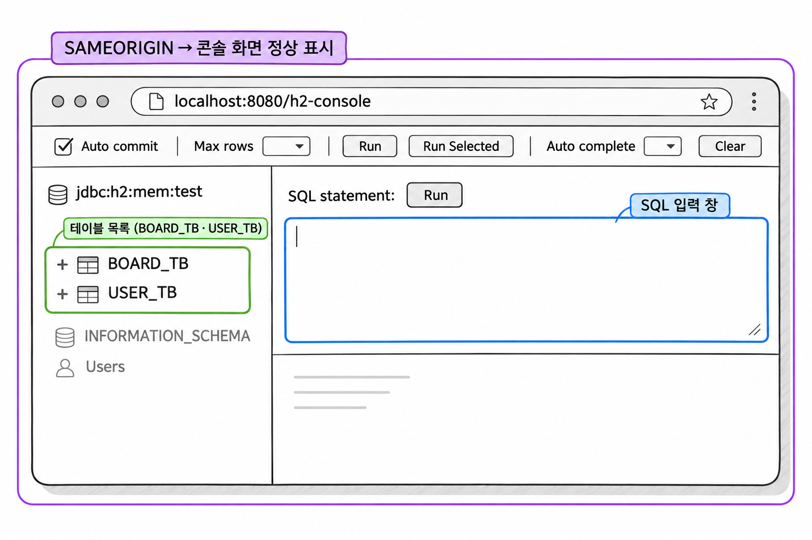

9장. Spring Security란?
1. Spring Security의 개념
1.1 인증과 인가
Spring Security(스프링 시큐리티)는 Spring 애플리케이션에 보안 기능을 붙이는 프레임워크입니다. 이 프레임워크가 맡는 일은 인증과 인가이고, 두 일은 서로 다른 질문에 답합니다.
인증(authentication)은 요청을 보낸 사람이 누구인지 확인하는 일입니다. 아이디와 비밀번호를 받아 저장된 회원 정보와 비교하는 로그인이 대표적인 예입니다. 인가(authorization)는 인증된 사람이 요청한 일을 해도 되는지 판단하는 일입니다. 로그인한 회원이라도 남의 글은 고치지 못하게 막는 것이 인가입니다.
| 구분 | 묻는 질문 | 블로그 API의 예 | 실패 응답 |
|---|---|---|---|
| 인증 | 누구인가? | 로그인, 토큰 확인 | 401 Unauthorized |
| 인가 | 해도 되는가? | 작성자만 글 수정 · 삭제, 관리자만 관리자 API 호출 | 403 Forbidden |
인가는 항상 인증 다음에 옵니다. 누구인지 모르는 상태에서는 무엇을 허락할지 정할 수 없습니다. 3장에서 본 상태 코드 401과 403도 이 순서를 따릅니다. 401은 "누구인지 모른다", 403은 "누구인지는 알지만 이 일은 허락할 수 없다"는 뜻입니다.

이 장에서는 Security를 프로젝트에 넣고, 기본 설정을 블로그 API에 맞게 바꾸는 데까지만 합니다. 회원가입은 10장, 로그인은 12장, 토큰을 확인하는 인증 필터는 14장, 작성자 검사 같은 인가는 15장에서 만듭니다.
1.2 필터 체인 구조
Spring Security는 서블릿 필터(filter)로 동작합니다. 필터는 요청이 컨트롤러에 닿기 전에 먼저 받아서 검사하거나 바꾸는 객체입니다. 6장에서 만든 컨트롤러는 Spring MVC의 DispatcherServlet이 호출하는데, 필터는 이 DispatcherServlet보다 앞에서 실행됩니다. 그래서 보안 검사를 통과하지 못한 요청은 컨트롤러 코드가 실행되기 전에 돌려보낼 수 있습니다.
필터는 여러 개가 줄지어 연결되어 있고, 이 줄을 필터 체인(filter chain)이라고 합니다. 각 필터는 자기 검사를 마치면 요청을 다음 필터로 넘깁니다. 검사에 실패하면 다음 필터로 넘기지 않고 그 자리에서 응답을 돌려줍니다.
Spring Security가 필터 체인에 끼어드는 과정은 다음과 같습니다.
- 서블릿 컨테이너(내장 Tomcat)에
DelegatingFilterProxy라는 필터 하나가 등록됩니다. 이 필터는 일을 직접 하지 않고 스프링 컨테이너에 있는 빈에게 넘깁니다. - 일을 넘겨받는 빈은
FilterChainProxy입니다. Spring Security로 들어오는 출입구 역할을 합니다. FilterChainProxy는 요청 주소에 맞는 SecurityFilterChain을 고르고, 그 안의 보안 필터들을 차례대로 실행합니다.- 보안 필터를 모두 통과한 요청만
DispatcherServlet을 거쳐 컨트롤러에 도착합니다.
중간에 DelegatingFilterProxy를 두는 이유는 서블릿 필터와 스프링 빈의 등록 시점이 다르기 때문입니다. 서블릿 컨테이너는 스프링 빈이 만들어지기 전에 필터를 등록합니다. 그래서 자리만 맡아 두는 필터를 먼저 등록하고, 실제 보안 처리는 나중에 만들어지는 스프링 빈에게 넘깁니다. 덕분에 보안 필터도 다른 빈처럼 의존성을 주입받을 수 있습니다.
SecurityFilterChain 안에는 CSRF를 검사하는 CsrfFilter, 폼 로그인을 처리하는 UsernamePasswordAuthenticationFilter, 접근 권한을 판단하는 AuthorizationFilter 같은 필터가 정해진 순서로 들어 있습니다. 개발자가 이 필터를 하나씩 등록하지는 않습니다. HttpSecurity라는 설정 도구에 "CSRF는 끈다", "모든 주소를 연다"처럼 선언하면 그 선언에 맞는 필터가 체인에 들어가거나 빠집니다. 2절에서 만드는 설정 클래스가 이 선언을 담습니다.

2. SecurityFilterChain 설정
2.1 starter-security 추가와 기본 동작
Spring Security도 스타터 하나로 추가합니다. spring-boot-starter-security를 넣으면 자동 설정이 동작해서, 설정 코드를 한 줄도 쓰지 않아도 애플리케이션 전체가 잠깁니다.
예제 9-1 — Spring Security 스타터 추가하기
이어서: 예제 8-3
파일명: build.gradle
plugins {
id 'java'
id 'org.springframework.boot' version '4.1.3'
id 'io.spring.dependency-management' version '1.1.7'
}
group = 'com.newtenco'
version = '0.0.1-SNAPSHOT'
java {
toolchain {
languageVersion = JavaLanguageVersion.of(21)
}
}
repositories {
mavenCentral()
}
dependencies {
implementation 'org.springframework.boot:spring-boot-h2console'
implementation 'org.springframework.boot:spring-boot-starter-data-jpa'
// 스프링 시큐리티: 넣기만 해도 모든 주소가 잠긴다. 기본 설정은 SecurityConfig에서 바꾼다
implementation 'org.springframework.boot:spring-boot-starter-security'
implementation 'org.springframework.boot:spring-boot-starter-webmvc'
compileOnly 'org.projectlombok:lombok'
developmentOnly 'org.springframework.boot:spring-boot-devtools'
runtimeOnly 'com.h2database:h2'
annotationProcessor 'org.projectlombok:lombok'
// 테스트 (src/test 폴더에서만 사용)
testImplementation 'org.springframework.boot:spring-boot-starter-data-jpa-test'
testImplementation 'org.springframework.boot:spring-boot-starter-webmvc-test'
testRuntimeOnly 'org.junit.platform:junit-platform-launcher'
}
tasks.named('test') {
useJUnitPlatform() // 테스트를 JUnit 5로 실행
}실행 결과
4장에서 넣은 테스트 의존성과 tasks.named('test') 블록은 그대로 둡니다. 지우면 src/test의 테스트 코드가 컴파일되지 않습니다. IntelliJ IDEA에서 Load Gradle Changes를 누른 뒤 서버를 끄고 .\gradlew.bat bootRun으로 다시 실행하면 로그에 다음 경고가 찍힙니다. 비밀번호는 실행할 때마다 새로 만들어지므로 화면에 보이는 값은 다릅니다.
Using generated security password: 78fa095d-3f4c-48b1-ad50-e24c31d5cf35
This generated password is for development use only. Your security configuration must be updated before running your application in production.Postman으로 GET http://localhost:8080/api/boards를 보내면 글 목록 대신 상태 코드 401 Unauthorized가 돌아오고 본문은 비어 있습니다. 같은 주소를 브라우저 주소창에 입력하면 Spring Security가 만든 로그인 화면으로 이동합니다.

생성형 예시 · 실제 실행 안 함
8장까지 잘 동작하던 글 목록 API가 막힌 것은 Spring Boot가 넣어 준 기본 보안 설정 때문입니다. 스타터만 넣은 상태에서는 다음 규칙이 적용됩니다.
| 기본 동작 | 내용 |
|---|---|
| 모든 주소 잠금 | 인증하지 않은 요청은 어떤 주소에도 들어갈 수 없습니다(/error 포함). |
| 기본 사용자 | 아이디는 user, 비밀번호는 서버를 켤 때 로그에 찍히는 임의 값입니다. |
| 폼 로그인 | 브라우저가 보낸 요청이면 /login 로그인 화면으로 보냅니다. |
| HTTP Basic | 그 밖의 요청이면 401로 응답하고, 아이디와 비밀번호를 헤더에 담아 보내라고 알립니다. |
| CSRF 보호 | POST · PUT · PATCH · DELETE처럼 상태를 바꾸는 요청에 CSRF 토큰이 없으면 거절합니다. |
| 보안 헤더 | 응답에 X-Frame-Options: DENY 같은 보안 헤더를 붙입니다. |
같은 주소인데 Postman과 브라우저의 결과가 다른 것은 폼 로그인과 HTTP Basic이 함께 켜져 있기 때문입니다. Spring Security는 요청이 브라우저 화면을 원하는지 보고, 로그인 화면으로 보낼지 401을 돌려줄지 고릅니다.
이 기본값은 서버가 HTML 화면을 그려 보내는 웹 애플리케이션에 맞춰져 있습니다. 이 책의 블로그는 JSON만 주고받는 REST API이고, 로그인도 12장에서 JWT로 직접 만듭니다. 그래서 기본 설정을 그대로 두지 않고 SecurityFilterChain을 빈으로 직접 등록해 바꿉니다.
2.2 CSRF · 폼 로그인 · HTTP Basic 끄기
SecurityFilterChain 빈을 직접 등록하면 Spring Boot는 기본 필터 체인을 만들지 않고 이 빈을 씁니다. 빈은 2장에서 본 @Configuration과 @Bean으로 등록하며, 메서드는 HttpSecurity를 매개변수로 받아 규칙을 선언합니다. 마지막에 http.build()로 필터 체인을 만들어 돌려줍니다.
기본 문법
@Bean
public SecurityFilterChain 메서드명(HttpSecurity http) throws Exception {
http.기능(설정 -> 설정.옵션());
return http.build();
}csrf(), formLogin() 같은 메서드가 각각 기능 하나를 맡고, 람다로 그 기능의 옵션을 정합니다. 2.2부터 2.4까지 다룰 설정을 한 파일에 모두 담으면 다음과 같습니다.
예제 9-2 — SecurityFilterChain 직접 등록하기
이어서: 예제 9-1
파일명: src/main/java/com/newtenco/blog/core/SecurityConfig.java
package com.newtenco.blog.core;
import org.springframework.context.annotation.Bean;
import org.springframework.context.annotation.Configuration;
import org.springframework.security.config.annotation.web.builders.HttpSecurity;
import org.springframework.security.web.SecurityFilterChain;
// 스프링 설정 클래스. 안의 @Bean 메서드가 돌려준 객체를 스프링 빈으로 등록한다
@Configuration
public class SecurityConfig {
// SecurityFilterChain: 요청이 컨트롤러에 닿기 전에 거치는 보안 필터 목록
// 이 빈을 직접 등록하면 Spring Boot는 기본 필터 체인을 만들지 않고 이 빈을 쓴다
// HttpSecurity: "이 기능은 켠다 / 끈다"를 선언하는 설정 도구. 스프링이 매개변수로 넣어 준다
@Bean
public SecurityFilterChain filterChain(HttpSecurity http) throws Exception {
// 모든 설정은 http.기능(설정 -> 설정.옵션()) 모양이다
// 메서드 이름이 기능을 고르고, 괄호 안의 람다가 그 기능의 옵션을 정한다
// [H2 콘솔 화면 허용]
// 시큐리티는 기본으로 우리 서버의 화면이 프레임 안에 들어가는 것을 막는다
// H2 콘솔은 화면 여러 개를 끼워 만든 화면이라 그대로 두면 빈 화면이 나온다
// sameOrigin(): 우리 서버의 화면끼리는 끼워 넣을 수 있게 허용한다
http.headers(headers -> headers.frameOptions(frame -> frame.sameOrigin()));
// [CSRF 보호 끄기]
// CSRF: 다른 사이트가 로그인한 사용자의 브라우저로 몰래 요청을 보내게 하는 공격
// 브라우저가 쿠키를 자동으로 붙여 보내기 때문에 생기는 공격이다
// 이 책은 로그인 토큰을 쿠키가 아닌 Authorization 헤더로 보내므로(12장) 이 공격이 통하지 않는다
// 켜 두면 CSRF 토큰이 없는 POST · PUT · PATCH · DELETE 요청이 403으로 거절된다
// 주의: 토큰을 쿠키에 담도록 바꾸면 CSRF 보호를 다시 켜야 한다
http.csrf(csrf -> csrf.disable());
// [폼 로그인 끄기]
// 켜 두면 인증 안 된 브라우저 요청을 /login 로그인 화면으로 보낸다
// 로그인은 12장에서 JSON을 주고받는 API로 직접 만든다
http.formLogin(form -> form.disable());
// [HTTP Basic 끄기]
// 켜 두면 인증 안 된 요청에 401과 "아이디 · 비밀번호를 헤더로 보내라"는 응답 헤더를 돌려준다
// 이 책에서는 쓰지 않는 로그인 방식이다
http.httpBasic(basic -> basic.disable());
// [주소별 접근 규칙] AuthorizationFilter가 이 규칙을 보고 요청을 통과시킬지 정한다
// anyRequest(): 모든 요청, permitAll(): 로그인 여부와 상관없이 허용
// 아직 토큰을 확인하는 필터가 없어서 지금 잠그면 아무도 쓸 수 없다. 14장에서 주소별로 잠근다
http.authorizeHttpRequests(auth -> auth.anyRequest().permitAll());
// 위에서 선언한 내용대로 필터 체인을 만들어 돌려준다
return http.build();
}
}실행 결과
서버를 다시 띄우고 Postman으로 GET http://localhost:8080/api/boards를 보내면 401 대신 8장과 같은 글 목록이 돌아옵니다.
{
"status": 200,
"msg": "성공",
"body": {
"boards": [
{
"id": 5,
"title": "제목5",
"content": "내용5",
"username": "cos",
"createdAt": "2026-11-20T01:30:00.000Z"
},
{
"id": 4,
"title": "제목4",
"content": "내용4",
"username": "cos",
"createdAt": "2026-11-20T01:30:00.000Z"
},
{
"id": 3,
"title": "제목3",
"content": "내용3",
"username": "ssar",
"createdAt": "2026-11-20T01:30:00.000Z"
}
],
"number": 0,
"totalPage": 2,
"isFirst": true,
"isLast": false
}
}createdAt에는 샘플 데이터를 넣은 시각, 즉 서버를 켠 시각이 들어가므로 직접 실행한 값과 다릅니다. 설정 클래스는 core 패키지에 두었습니다. 메인 클래스가 있는 com.newtenco.blog 아래이므로 컴포넌트 스캔이 이 클래스를 찾습니다. 서버 로그에는 여전히 Using generated security password: 줄이 찍힙니다. 이 비밀번호는 기본 사용자 user의 것입니다. 기본 사용자를 만드는 자동 설정은 SecurityFilterChain과 따로 동작하므로, 필터 체인을 바꿔도 이 줄은 사라지지 않습니다. 예제 9-2에서 폼 로그인과 HTTP Basic을 껐기 때문에 이 계정으로 로그인할 방법은 없습니다. 이 책에서는 쓰지 않으니 무시해도 됩니다.
예제 9-2에서 먼저 볼 곳은 가운데 세 줄입니다.
코드 조각
http.csrf(csrf -> csrf.disable());
http.formLogin(form -> form.disable());
http.httpBasic(basic -> basic.disable());CSRF(Cross-Site Request Forgery, 사이트 간 요청 위조)는 사용자가 로그인해 둔 사이트로 다른 사이트가 몰래 요청을 보내게 만드는 공격입니다. 브라우저는 요청을 보낼 때 그 사이트의 쿠키를 자동으로 함께 보냅니다. 그래서 세션 쿠키로 로그인을 유지하는 사이트라면, 공격 사이트가 보낸 요청도 로그인한 사용자의 요청처럼 처리됩니다. Spring Security는 이 공격을 막으려고 상태를 바꾸는 요청(POST · PUT · PATCH · DELETE)마다 서버가 발급한 CSRF 토큰을 요구합니다.
이 책의 API는 쿠키를 쓰지 않고 Authorization 헤더에 토큰을 담아 인증합니다(12장). 브라우저가 자동으로 붙여 보내는 인증 값이 없으므로 CSRF 보호가 필요하지 않습니다. 켜 두면 오히려 10장의 회원가입 POST 요청이 CSRF 토큰이 없다는 이유로 403을 받습니다.
이 판단은 토큰을 헤더로 보낼 때만 맞습니다. 토큰을 쿠키에 담기로 하면 브라우저가 다시 토큰을 자동으로 보내므로, SameSite 쿠키 속성이나 CSRF 토큰 같은 대책이 다시 필요합니다.
폼 로그인을 끄면 /login 로그인 화면과, 그 화면에서 보낸 아이디 · 비밀번호를 처리하는 필터가 체인에서 빠집니다. HTTP Basic을 끄면 아이디와 비밀번호를 요청 헤더에 담아 보내는 인증 방식이 빠집니다. 둘 다 이 책에서 쓰지 않는 로그인 방식입니다. 로그인은 12장에서 JSON을 받는 API로 직접 만듭니다.
2.3 H2 콘솔 프레임 허용
예제 9-2의 첫 줄은 H2 콘솔을 위한 설정입니다.
코드 조각
http.headers(headers -> headers.frameOptions(frame -> frame.sameOrigin()));H2 콘솔은 HTML의 <frame>으로 화면 여러 개를 이어 붙여 만든 웹 화면입니다. Spring Security는 기본으로 모든 응답에 X-Frame-Options: DENY 헤더를 붙여, 이 서버가 보낸 화면이 어떤 프레임 안에도 들어가지 못하게 막습니다. 다른 사이트가 우리 화면을 투명한 프레임 안에 숨겨 두고 사용자의 클릭을 가로채는 공격, 즉 클릭재킹(clickjacking)을 막는 설정입니다. 이 헤더는 H2 콘솔 응답에도 붙습니다. 그래서 이 설정 줄이 없으면 콘솔에 연결한 뒤 화면이 비어 있거나 "연결을 거부했습니다"라는 메시지만 보입니다.
sameOrigin()은 헤더 값을 SAMEORIGIN으로 바꿉니다. 같은 출처(같은 프로토콜 · 호스트 · 포트)의 화면끼리는 프레임으로 넣을 수 있고, 다른 사이트에서는 여전히 넣을 수 없습니다. 보호를 통째로 끄지 않고 H2 콘솔이 동작할 만큼만 연 것입니다.
H2 콘솔의 연결 버튼은 POST 요청을 보냅니다. 2.2에서 CSRF를 껐기 때문에 이 요청도 CSRF 토큰 없이 통과합니다.
예제 9-2를 실행한 상태에서 브라우저로 http://localhost:8080/h2-console에 접속합니다. 4장에서 한 것처럼 JDBC URL에 jdbc:h2:mem:test를 넣고 연결하면 콘솔 화면이 정상으로 보입니다.

생성형 예시 · 실제 실행 안 함
2.4 모든 주소 열기(permitAll)
예제 9-2의 마지막 설정은 주소별 접근 규칙입니다.
코드 조각
http.authorizeHttpRequests(auth -> auth.anyRequest().permitAll());authorizeHttpRequests()는 주소별 접근 규칙을 정하는 메서드이고, 1.2에서 본 AuthorizationFilter가 이 규칙을 보고 요청을 통과시킬지 판단합니다. anyRequest()는 모든 요청을, permitAll()은 인증 여부와 상관없이 허용한다는 뜻입니다. 이 한 줄로 "어떤 주소든 누구나 들어올 수 있다"는 규칙이 됩니다.
Security를 넣어 놓고 모든 주소를 여는 것이 이상해 보일 수 있습니다. 하지만 지금은 토큰을 발급하는 로그인도, 요청에 담긴 토큰을 확인하는 필터도 없습니다. 인증할 방법이 없는 상태에서 주소를 잠그면 누구도 글 목록을 볼 수 없습니다. 그래서 이 장에서는 Security의 틀만 갖춰 둡니다. 주소별로 authenticated() · denyAll() 같은 규칙을 거는 일은 14장에서 인증 필터를 만든 뒤에 합니다.